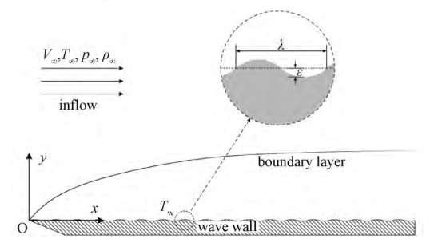
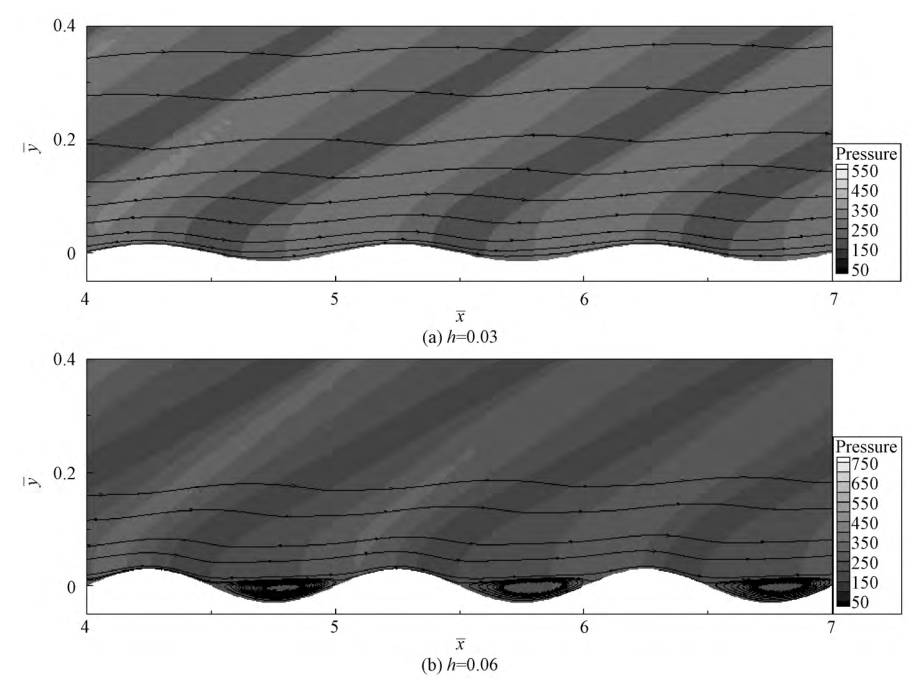
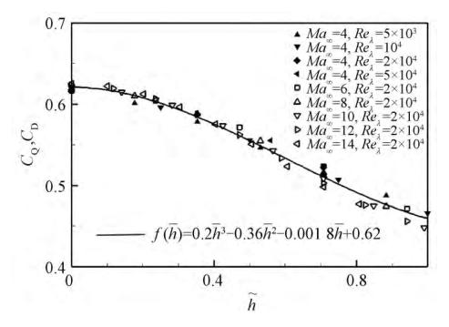
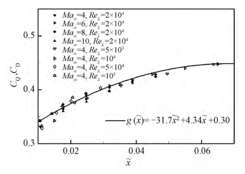

01中文摘要
本文以半无穷长正弦波状板作为微粗糙壁面模型，使用 OpenFOAM 数值研究不同来流参数和波幅下的高速流动与传热。结果表明，波状壁流动的壁面热流系数 CQ 与总阻力系数 CD 存在直接关联，CQ/CD 是表征粗糙壁流动与传热特性的关键参数。对于附着型流动，CQ/CD 仅取决于粗糙度与边界层厚度之比（等效粗糙度）；当流动发生分离后，CQ/CD 不再随粗糙度变化，而仅与波状板相似变换后的位置参量有关。研究还讨论了粗糙元诱导转捩的判据和计算适用范围。
原始摘要（英文/原文）
微粗糙壁面上高速气流的流动和传热特性是当前关注的问题。以半无穷长正弦波状板作为微粗糙壁面模型,使用OpenFOAM程序,数值研究不同来流参数和不同波幅的正弦波状板流动。结果表明,在波状壁流动中,壁面热流系数CQ与总阻力系数CD呈现出直接关联,CQ/CD是表征粗糙壁流动与传热特性的关键参数。对于附着型流动,CQ/CD仅取决于粗糙度与边界层厚度之比,即等效粗糙度■;而流动产生分离后,CQ/CD不再随粗糙度变化,仅与波状板相似变化后的位置参量有关。
02阅读说明
数值模拟（CFD 参数研究），中文期刊论文，全文 9 页（p.736–744）完整读完；图 1–9 均有抓图，图注可读。bundle 文本层的公式排版散乱（分式、上下标错位），已回读原 PDF 第 7–8 页核对式 (9)–(12)；式 (1)–(8) 以 bundle 文本与图注为准，个别符号（如式 (3) 的 χ̄ 定义）未逐字核对。信息完整度较高：给出几何、气体模型、数值格式、三类验证、网格/CFL 无关性与拟合式，但无实验对比、无湍流/转捩计算。提取口径：只使用 bundle 与上述 PDF 核对页，不引入外部知识。 文章类型：期刊
03一句话核心与三句话摘要
正弦波状粗糙壁高速层流中，壁面热流与总阻力直接关联，并可由等效粗糙度或相似位置归一。
- 已有粗糙壁热流研究多针对大钝头再入体、只关心热流而少讨论摩阻；对新一代扁平化飞行器，摩阻占比可超 30%，简单雷诺比拟是否适用于粗糙壁成为需要澄清的问题。 AI概括
- 用 OpenFOAM 求解二维定常可压缩 N-S 方程，计算 Ma∞=4–14、Reλ=5×10^3–1×10^5、h=0.01–0.1 的正弦波状板，发现 CQ/CD 在附着流中只依赖等效粗糙度 h̃，分离后只依赖相似位置 x̃。 AI概括
- 作者给出分段拟合式 (10) 与 (12)，认为粗糙壁气动加热与总阻力而非摩阻直接关联，CQ/CD 可作为工程预研估算参数，但分离起始位置仍无法定量确定。 原文明确
04核心内容清单
| 要点 | 类型 | 重要性 | 原文依据 | 属性 |
|---|---|---|---|---|
| 以半无穷长正弦波状板作为标准粗糙元模型，波长 λ 为特征长度，无量纲波幅 h=2ε/λ，仅研究 h<0.1 的微粗糙层流。 | 物理模型 | A | p.737–738，图 1 | 原文明确 |
| 控制方程为二维定常可压缩黏性 N-S 方程，OpenFOAM 有限体积、二阶 Kurganov-Tadmor 中心格式求解。 | 数值方法 | A | p.738 式 (2) | 原文明确 |
| 光滑平板黏性干扰验证：Cf、Ch 偏差 5% 以内，Cp 最大偏差 10%；波形壁压力验证最大偏差 7%。 | 程序验证 | A | p.739，图 2、图 3 | 原文明确 |
| 网格 500×200、CFL=0.01 后计算结果与网格/时间步长无关。 | 网格与时间步无关性 | A | p.739–740，图 4 | 原文明确 |
| 热流与摩阻无直接关联：小 h 时 CQ/CDf 沿 x̄ 显著变化，而 CQ/CD 基本不变。 | 核心现象 | A | p.740，图 5 | 原文明确 |
| h=0.03 流动附着，h=0.06 波谷出现分离涡；两种 CQ/CD 规律对应不同流动结构。 | 流态判别 | A | p.741，图 7 | 原文明确 |
| 附着流中不同 Ma∞、Reλ 的 CQ/CD 随 h̃=h√Reλ/Ma∞ 坍缩，拟合式 (10) 为三次多项式。 | 归一化规律 | A | p.742，式 (9)(10)，图 8 | 原文明确 |
| 分离流中 CQ/CD 近似与 h 无关，随相似位置 x̃=x̄/√Reλ 坍缩，拟合式 (12)。 | 归一化规律 | A | p.743，式 (11)(12)，图 9 | 原文明确 |
| 式 (10) 的 CQ/CD 最大偏差估计为 15%–20%，可供工程预研或估算参考。 | 误差估计 | A | p.742 | 原文明确 |
| 分离起始位置只能定性判断（Ma∞ 越低、Reλ 越高、h 越大、离前缘越远越易分离），尚不能定量给出。 | 未解决问题 | A | p.743 | 原文明确 |
| 大 h 或大 x̄ 时流场出现多涡聚集、热流与阻力剧烈抖动，需考虑非定常、转捩与湍流。 | 适用边界 | B | p.741 | 原文明确 |
| 用 PANT 转捩准则 Reθtr=215(kTe/θTw)^(−0.7) 估算，k≈0.01 m（h=0.1）为临界粗糙元高度，故本文 h<0.1 视为层流。 | 层流假设依据 | B | p.742，式 (8) | 原文明确 |
05引言：研究问题与领域缺口
问题背景：再入飞行器速度可达 20–30 倍声速、壁温数千 K，烧蚀热防护造成微粗糙壁面；下一代乘波体类飞行器波阻大减、表面摩阻占比可升至 30% 以上（p.737）。已有工作分两类：以 PANT 计划为代表的实验经验公式（Dirling、Phinney、Grabow）和数值计算（Yang 等、李俊红等），共同指出雷诺数、边界层厚度和等效粗糙元高度是主要参数（p.737）。缺口：这些研究源于大钝头再入体，波阻远大于摩阻，因而“大多只关心粗糙壁的热流，而极少有对摩阻的讨论”（p.737）；同时，光滑平板层流边界层的雷诺比拟 Ch/Cf=Pr^(−2/3) 在粗糙壁上是否成立存疑，而超声速下压强波动还会产生波阻，热流究竟与摩阻还是总阻力相关尚无答案（p.737、p.740）。目标与假设：以半无穷长正弦波状板作为标准粗糙元模型，取波长 λ 为特征长度，h=2ε/λ<0.1，用 OpenFOAM 计算高速层流，介质为量热完全气体空气（R=287 J/(kg·K)、γ=1.4、Pr=0.72），T∞=Tw=300 K；作者明确“计算仅考虑层流情况”（p.737），并先用 PANT 转捩准则论证 h<0.1 时可按层流处理（p.742）。
06流动条件与几何构型
| 项目 | 数值/描述 | 依据 | 备注 |
|---|---|---|---|
| 来流马赫数（主算例） | Ma∞=4 | p.740，图 5–7 | 图 5 取 h=0.01–0.03；图 6 取 h=0.01–0.1；图 7 取 h=0.03 与 0.06 |
| 来流雷诺数（主算例） | Reλ=ρ∞V∞λ/μ∞=2×10^4 | p.740，图 5–7 | 以波长 λ 为参考长度 |
| 相对粗糙度（主算例） | 0.01≤h≤0.1；图 5 为 0.01≤h≤0.03，图 6 为 0.01≤h≤0.1 | p.740–741 | h=2ε/λ，仅研究 h<0.1 |
| 几何构型 | 半无穷长正弦波状板，y=εsin(2πx/λ)，二维 | p.737–738，图 1 | λ 为波长，ε 为波幅；前缘为原点 |
| 壁温与壁温比 | T∞=Tw=300 K，Θ=Tw/T∞=1 | p.738 | 全文计算一律取 Θ=1 |
| 气体模型 | 空气，量热完全气体，R=287 J/(kg·K)，γ=1.4，Pr=0.72 | p.737 | 未考虑真实气体效应 |
| 验证算例 1（黏性干扰平板） | Ma∞=8，ReL=2×10^5 m^−1，取 0.5<x̄<1（对应 6<χ̄<9） | p.739，图 2 | 与 Hayes-Probststein 强干扰理论式 (3) 对比 |
| 验证算例 2（无穷长波形壁） | Ma∞=4，Reλ=10^5，h=0.02，15<x̄<19 | p.739，图 3 | 与 Cp=4πε/[λ√(Ma∞²−1)]cos(2πx/λ) 对比 |
| 网格/CFL 无关性算例 | Ma∞=4，Reλ=2×10^4，h=0.02，板长 20λ；网格 500×200，CFL=0.01 | p.739–740，图 4 | 网格数大于 500×200、CFL<0.01 后结果一致 |
| 归一化算例集 | Ma∞=4–14，Reλ=5×10^3–1×10^5，共 10 组，0.01≤h≤0.1，板长 10λ | p.742 | 取第 5、6 个正弦波的平均 CQ/CD 为研究对象 |
| 图 8 与图 9 的算例数 | 图 8 为 9 组附着流算例；图 9 为 8 组分离流算例 | p.743 | 与正文“共 10 组”不完全一致，原文未说明差额 |
| 来流条件估计范围 | 飞行高度>40 km、Ma=4–12、λ<0.1 m，估计 Reλ≈5×10^3–1×10^5 | p.738 | 用于说明计算参数覆盖的工程范围 |
07核心现象与关键参数
| 参数 | 定义 | 数值 | 关系/说明 | 依据 |
|---|---|---|---|---|
| h（无量纲波幅/相对粗糙度） | h=2ε/λ，ε 为波幅，λ 为波长 | 0.01–0.1（本文仅 h<0.1） | h 越大，波谷逆压梯度越强，越易分离 | p.738 |
| h̃（等效粗糙度） | h̃=h√Reλ/Ma∞，即粗糙度与波形特征边界层厚度之比 | 由算例参数决定，图 8 横轴约 0–0.8 | 附着流 CQ/CD=f(h̃) | p.742，式 (9) |
| x̃（等效位置） | x̃=x̄/√Reλ，由 Blasius 相似变换尺度得到 | 图 9 横轴约 0.02–0.07 | 分离流 CQ/CD=g(x̃) | p.743，式 (11) |
| Reλ | ρ∞V∞λ/μ∞，以波长 λ 为参考长度的来流雷诺数 | 5×10^3–1×10^5 | 与 Ma∞ 共同决定 h̃ | p.738 |
| CQ（平均热流系数） | 单周期壁面热流的积分平均，按 ρ∞V∞(haw−hw)λ 无量纲化 | 由图 5–9 给出分布，无单一数值 | CQ/CD 为核心关联量 | p.740，式 (7) |
| CD（平均总阻力系数） | CD=CDf+CDp，摩阻与压阻之和 | 无单一数值 | 与 CQ 直接关联 | p.740，式 (6) |
| CDf（平均摩阻系数） | 单周期壁面切应力水平分量的积分平均 | 无单一数值 | 与 CQ 无稳定比例 | p.740，式 (4) |
| CDp（平均压阻系数） | 单周期壁面压强乘 tanθ 的积分平均，即波阻 | 无单一数值 | CDp=CD−CDf；超声速下不可忽略 | p.740，式 (5) |
| θ（壁面倾角） | tanθ=dȳ/dx̄=πhcos(2πx̄) | 随 x̄ 周期变化 | 控制压阻积分 | p.740 |
| 附着流拟合式 | CQ/CD=0.20h̃³−0.36h̃²−0.0018h̃+0.62 | h̃ 在数值算例覆盖范围内 | 未分离时使用 | p.742，式 (10) |
| 分离流拟合式 | CQ/CD=−31.7x̃²+4.34x̃+0.30 | x̃ 在数值算例覆盖范围内 | 已分离时使用 | p.743，式 (12) |
| 转捩雷诺数 Reθtr | Reθtr=215(kTe/θTw)^(−0.7)，k 为粗糙元尺度，本文 k=2ε | 临界 k≈0.01 m，对应 h≈0.1 | 用于论证 h<0.1 可按层流处理 | p.742，式 (8) |
08方法与数据
控制方程为二维定常、可压缩、黏性 N-S 方程，含连续、动量与能量方程，能量方程保留导热、压力功与耗散函数 Φ（p.738 式 (2)）。采用 OpenFOAM 有限体积程序，二阶 Kurganov-Tadmor 中心格式；该格式满足 TVD 与最大值原理、与时间步长无关（p.738）。无量纲化以来流密度、速度、温度及波长 λ 为参考，定义 Reλ=ρ∞V∞λ/μ∞、Ma∞=V∞/√(γRT∞)，来流状态由 Reλ 与 Ma∞ 描述（p.738）。验证分三步：(1) Ma∞=8、ReL=2×10^5 m^−1 的光滑平板黏性干扰区，与 Hayes-Probststein 强干扰理论式 (3) 比较，Cf、Ch 偏差 5% 以内，Cp 最大偏差 10%（即 p 偏差 4%）（p.739）；(2) Ma∞=4、Reλ=10^5、h=0.02、15<x̄<19 的无穷长波形壁，与 Cp=4πε/[λ√(Ma∞²−1)]cos(2πx/λ) 比较，最大偏差 7%（即 p 偏差 3%）（p.739）；(3) Ma∞=4、Reλ=2×10^4、h=0.02、板长 20λ 的网格与时间步长无关性检验，网格数大于 500×200 后结果不再随加密变化，CFL<0.01 后趋于一致，故后续取 500×200、CFL=0.01（p.739–740）。后处理取单个正弦波周期内壁面量的积分平均，定义 CDf、CDp、CD、CQ（式 (4)–(7)），以消除热流、摩阻、压强因黏性/热传导响应滞后造成的相位不同步（p.740）。拟合采用三次多项式，误差由验证偏差传递估算（p.742）。
| 项目 | 内容 | 依据 | 备注 |
|---|---|---|---|
| 控制方程 | 二维定常、可压缩、黏性 N-S 方程（连续、动量、能量），能量方程含导热、压力功与耗散 Φ | p.738，式 (2) | 层流，无湍流模型 |
| 数值程序 | OpenFOAM 开源有限体积程序 | p.738 | 作者强调 FVM 对壁面热流/摩阻精度较高 |
| 空间格式 | 二阶 Kurganov-Tadmor 中心格式，满足 TVD 与最大值原理，与时间步长无关 | p.738 | 格式细节引文献 [11] |
| 时间推进/CFL | CFL=V∞Δt/Δx=0.01 | p.739–740，图 4 | CFL<0.01 后结果趋于一致 |
| 网格 | 500×200 | p.740，图 4 | 网格数大于 500×200 后结果不随加密变化 |
| 验证 1 | 光滑平板黏性干扰区：Ma∞=8、ReL=2×10^5 m^−1，与 Hayes-Probststein 式 (3) 对比；Cf、Ch 偏差<5%，Cp 最大偏差 10% | p.739，图 2 | 强干扰区 6<χ̄<9 |
| 验证 2 | 无穷长波形壁：Ma∞=4、Reλ=10^5、h=0.02，与二维超声速波形壁理论解对比；最大偏差 7% | p.739，图 3 | 15<x̄<19，近似理论适用区 |
| 平均方法 | 单周期积分平均，定义 CDf、CDp、CD、CQ | p.740，式 (4)–(7) | 因黏性/热传导响应慢于压力，各量相位不同步 |
| 拟合方法 | 三次多项式拟合 CQ/CD–h̃ 与 CQ/CD–x̃ | p.742–743，式 (10)(12) | 无数值结果之外的独立验证 |
| 误差估计 | 由 Cf/Ch 5%、Cp 10% 的验证偏差传递，估计 CQ/CD 最大偏差 15%–20% | p.742 | 属于量级估计，非严格不确定度分析 |
| 层流性判据 | PANT 转捩准则 Reθtr=215(kTe/θTw)^(−0.7)，估算 k≈0.01 m 对应 h≈0.1 | p.742，式 (8) | 据此只讨论 h<0.1 的层流 |
09核心推导与公式
先用量热完全气体平板边界层的厚度标度 δλ/λ～F(Ma∞)/√Reλ，把“粗糙度/边界层厚度”之比写成一个组合参数 h√Reλ/Ma∞，即等效粗糙度 h̃；再用多组数值算例检验 CQ/CD 是否只依赖 h̃。对分离流，借用 Blasius 相似变换的 1/√Re 尺度定义等效位置 x̃，并检验 CQ/CD 是否只依赖 x̃。最后由数值点作三次多项式拟合。
关键假设
- 二维、定常、层流，边界层近似成立
- 量热完全气体，R、γ、Pr 与壁温比 Θ 固定（空气，γ=1.4，Pr=0.72，Θ=1）
- 微粗糙，h=2ε/λ<0.1，波状板半无穷长，流动具有周期性
- 可压缩平板边界层厚度可用 δλ/λ～F(Ma∞)/√Reλ 估算
- 分离后流场仍具有 Blasius 型自相似性，可用 1/√Reλ 缩放
- 周期平均量可代表壁面热流与阻力（忽略各量相位差）
推导过程
以 1/2ρ∞V∞² 无量纲化压强与壁面切应力，以 ρ∞V∞(haw−hw) 无量纲化壁面热流，得到 Cp、Cf、Ch，作为后续单周期平均的基础。
壁面切应力沿壁面的水平分量积分给出平均摩阻系数；压强乘壁面倾角 tanθ 的积分给出平均压阻系数；两者相加为平均总阻力系数。热流沿壁面法向的积分除以 cosθ 给出平均热流系数。
在 γ、Pr、Θ 固定时，一个波长上的特征边界层厚度满足 δλ/λ～F(Ma∞)/√Reλ。把波幅与厚度之比展开，得到 2ε/δλ∝h√Reλ/Ma∞，说明单独用 h 不足以刻画粗糙壁效应，应使用粗糙度与边界层厚度之比。
把上述组合参数定义为等效粗糙度 h̃，并假设附着流中平均热流-阻力系数比只依赖于 h̃，即 CQ/CD=f(h̃)。
取 Ma∞=4–14、Reλ=5×10^3–1×10^5、0.01≤h≤0.1 的算例，小粗糙度下不同算例的 CQ/CD 近似落在同一条 h̃ 曲线上（图 8）；对数值点作三次多项式拟合，得到式 (10)。该式没有可对比的实验结果，误差由验证偏差传递估计为 15%–20%。
分离后 CQ/CD 不再随 h 坍缩，而随板上前缘距离变化。借鉴平板边界层 Blasius 解中尺度按 √Re 缩放的结论，定义等效位置 x̃=x̄/√Reλ，并假设分离流 CQ/CD=g(x̃)。
8 组不同 Ma∞、Reλ 的分离流算例中，CQ/CD 与 x̃ 的数据点近似组成一条曲线（图 9），二次多项式拟合得式 (12)。
适用边界：两式均为数值结果拟合，无可对比的实验数据；式 (10) 的 15%–20% 偏差是由 Cf/Ch 5%、Cp 10% 的验证偏差传递得到的量级估计，不是严格不确定度。推导依赖可压缩平板边界层厚度标度与分离流自相似假设，仅适用于二维定常层流、量热完全气体、Θ=1、h<0.1 且未出现强非定常/转捩的情况；分离起始位置未给出判据，h̃ 与 x̃ 的适用范围受所计算例限制。
10结果：主要发现与关键证据
主算例 Ma∞=4、Reλ=2×10^4。图 5 显示 h=0.01–0.03 时，CQ/CDf 在板前端沿 x̄ 变化显著、随后趋缓，而 CQ/CD 沿 x̄ 基本不变（p.740）；说明热流与摩阻无稳定比例，却与总阻力同步。图 6 把 h 扩到 0.01–0.1：h≥0.04 后 CQ/CD 随 x̄ 明显变化，但几条不同 h 的曲线绝大部分重合（p.741）。图 7 给出流场差异：h=0.03 时波谷附近未分离，类似光滑平板边界层；h=0.06 时波谷逆压梯度导致分离并形成明显分离涡，分离区壁面热流与阻力分布偏离层流边界层，但不同 h 的分离流场结构相似（p.741）。归一化：用可压缩平板边界层厚度标度构造 h̃=h√Reλ/Ma∞（式 (9)），9 组不同 Ma∞、Reλ 的附着流算例在小粗糙度下近似落在同一条 CQ/CD–h̃ 曲线上（图 8，p.743），三次拟合得式 (10)：CQ/CD=0.20h̃³−0.36h̃²−0.0018h̃+0.62（p.742）。分离流用 Blasius 相似缩放 x̃=x̄/√Reλ（式 (11)），8 组算例的 CQ/CD 近似落在同一条 CQ/CD–x̃ 曲线上（图 9，p.743），拟合得式 (12)：CQ/CD=−31.7x̃²+4.34x̃+0.30（p.743）。作者由验证偏差传递估计式 (10) 的 CQ/CD 最大偏差约 15%–20%（p.742）。
| 发现 | 证据 | 证据类型 | 强度 | 位置 | 属性 |
|---|---|---|---|---|---|
| 波状粗糙壁中壁面热流与摩阻没有明显相关性，而与总阻力直接关联；CQ/CD 是刻画流动与传热的关键参数。 | 图 5 中小 h 时 CQ/CDf 沿 x̄ 先显著变化后趋缓，而 CQ/CD 沿 x̄ 基本不变；结论段明确“壁面热流与摩阻没有明显的相关性，而与总阻力有直接关联”。 | 核心关联 | 强 | p.740，图 5；p.743 结论 | 原文明确 |
| 附着流中 CQ/CD 只取决于等效粗糙度 h̃=h√Reλ/Ma∞，不同 Ma∞、Reλ 的算例坍缩到同一条曲线。 | 图 8 的 9 组算例近似落在同一条 CQ/CD–h̃ 曲线上，并给出式 (10) 三次拟合。 | 归一化规律 | 强 | p.742–743，式 (9)(10)，图 8 | 原文明确 |
| 流动分离后 CQ/CD 不再随粗糙度 h 改变，只随等效位置 x̃=x̄/√Reλ 变化。 | 图 6 中 h≥0.04 的几条曲线绝大部分重合；图 9 中 8 组不同 Ma∞、Reλ 的分离流算例近似组成一条 CQ/CD–x̃ 曲线，并给出式 (12)。 | 归一化规律 | 强 | p.741，图 6；p.743，式 (11)(12)，图 9 | 原文明确 |
| 两种 CQ/CD 关联规律对应两种流态：h=0.03 时波谷流动附着，h=0.06 时波谷逆压梯度导致分离并形成分离涡。 | 图 7(a)(b) 的壁面附近流场图；正文指出 h=0.06 时分离区壁面热流与阻力分布与层流边界层差异很大，但分离流场结构相似、与 h 关系不大。 | 流态与机制 | 强 | p.741，图 7 | 原文明确 |
| 在附着流区，CQ/CD 随 h 增大而减小。 | 正文明确“在相对粗糙度 h 很小时，该比值近似与 x̄ 无关，随 h 增大而减少”；图 8 曲线随 h̃ 增大呈下降趋势。 | 参数趋势 | 中 | p.741–743，图 8 | 原文明确 |
| 式 (10) 的 CQ/CD 最大偏差约为 15%–20%，可用于工程预研或工程估算。 | 由第 2 节 Cf/Ch 最大偏差约 5%、Cp 最大偏差 10% 传递估计；作者明确该式“并无可对比的实验结果”。 | 误差与适用性 | 中 | p.742，§3.2.1 | 原文明确 |
| 按 PANT 转捩准则估算，临界粗糙元高度约 k≈0.01 m（h≈0.1），因此本文 h<0.1 的算例可按层流处理。 | 式 (8) Reθtr=215(kTe/θTw)^(−0.7)，取最大板长 1 m、Rex≈10^5–10^6、θ 量级 10^−3 m 估算。 | 层流假设 | 中 | p.742，式 (8) | 原文明确 |
11机制解释与论证链
粗糙壁使高速气流反复压缩和膨胀：波峰前压缩、波谷后膨胀。超声速下压强扰动不能完全相互抵消，一个周期平均后产生压差阻力（波阻）。总阻力由壁面摩阻与压阻组成，二者都对气流做功；在能量方程中，压力功、黏性耗散与导热共同决定传入壁面的热量，因此壁面热流更自然地与总阻力关联，而不是只与摩阻成雷诺比拟。附着流时，波幅相对边界层厚度很小，粗糙元只通过 h̃ 扰动近壁剪切与焓剖面，故 CQ/CD 随 h̃ 单参数变化；分离后，波谷内形成分离涡，分离区结构在不同 h 下相似，壁面平均热流与阻力由分离区在板上的相似位置 x̃ 决定，故 CQ/CD 近似与 h 无关。【AI概括，依据 p.740–743】
12讨论：结论、贡献与局限
机制论证链：粗糙壁使流动反复压缩/膨胀，超声速下压强波动在一周期内的平均效果不为零，产生压差阻力（波阻）；总阻力由摩阻与压阻组成，两者都对气流做功并进入能量方程的导热/耗散平衡，因此“粗糙壁面的气动加热量应当与壁面总阻力存在关联”（p.740，【原文明确】）。附着流中，粗糙元仅通过“粗糙度/边界层厚度”之比扰动近壁层，故 CQ/CD 由 h̃ 单参数控制；分离后，波谷内分离涡结构在不同 h 下相似，壁面平均量主要由分离区在板上的相似位置 x̃ 决定，与 h 无关（p.741–743，【AI概括】）。光滑平板雷诺比拟被解释为该关联在压阻为零时的特例（p.741，【原文明确】）。局限：作者承认 h 很大或 x̄ 很大时流场紊乱、出现多个涡聚集、热流与阻力剧烈抖动，需考虑非定常、转捩与湍流（p.741）；并明确“暂时无法定量地给出流动开始分离的位置”（p.743）。AI 识别的局限：二维层流、定常、量热完全气体、Θ=1，未覆盖真实气体、壁温变化、三维粗糙元与湍流；拟合式基于数值结果而非实验，15%–20% 误差仅由验证偏差传递估计（【AI推断】）。
作者结论
层流条件下，正弦波状粗糙壁流动中壁面热流与摩阻没有明显相关性，而与总阻力有直接关联；平均热流-阻力系数比 CQ/CD 是衡量流动与传热特性的关键参数。粗糙度很小时流动为附着型边界层，CQ/CD 近似与 x̄ 无关，仅取决于粗糙度与边界层厚度之比 h̃；流动分离后，壁面附近存在相似的分离涡结构，CQ/CD 仅取决于相似变换尺度 x̃。作者据此给出分段拟合式 (10) 与 (12)，并认为可用于工程预研估算（p.743）。
主要贡献
- 把正弦波状板作为标准粗糙元模型，系统计算了 Ma∞=4–14、Reλ=5×10^3–1×10^5、h=0.01–0.1 的高速层流粗糙壁流动与传热。
- 提出用等效粗糙度 h̃=h√Reλ/Ma∞ 归一化附着流 CQ/CD，用等效位置 x̃=x̄/√Reλ 归一化分离流 CQ/CD。
- 给出可工程使用的分段拟合式 (10)(12)，并估计其误差量级为 15%–20%。
- 指出粗糙壁热流应与总阻力而非摩阻建立比拟关系，把光滑平板雷诺比拟解释为压阻为零的特例。
局限与未解决问题
作者承认：h 很大或 x̄ 很大时流场紊乱、多涡聚集、热流与阻力剧烈抖动，需要考虑非定常、转捩与湍流（p.741）；“暂时无法定量地给出流动开始分离的位置”（p.743）。AI 识别：全文为二维定常层流、量热完全气体、Θ=1，不含真实气体、壁温变化、三维粗糙元、湍流与转捩计算；拟合式无实验验证，15%–20% 仅为偏差传递估计；图 8/9 的算例数与正文“共 10 组”不一致，原文未解释；式 (3) 的 χ̄、C 等符号在文本层有错位，未逐字核对。
13对高速流动与工程的意义
工程上，若壁面热流可由总阻力系数估算，则可用气动阻力数据快速预估微粗糙壁的热载荷，为新型乘波体/可重复使用飞行器的热防护与气动布局提供工程尺度关联式；概念上，它说明粗糙壁破坏简单雷诺比拟的根源是压阻（波阻）参与了能量平衡，而非仅仅是摩阻增大。不能回答的问题包括：湍流/转捩粗糙壁、三维粗糙元、真实气体与强壁温梯度、分离起始判据，以及非定常分离涡主导时的热流峰值。【AI推断】
14核心图件




15可引用原文素材
| 原文短句 | 可支持的观点 | 位置 | 使用建议 |
|---|---|---|---|
| “壁面热流与摩阻没有明显的相关性，而与总阻力有直接关联” | 全文核心结论 | p.743，结论 | 引用核心观点时的首选原句 |
| “CQ/CD 是表征粗糙壁流动与传热特性的关键参数” | CQ/CD 的定义性地位 | p.736，摘要；p.743，结论 | 概括参数意义 |
| “对于附着型流动，CQ/CD 仅取决于粗糙度与边界层厚度之比” | 附着流单参数 h̃ 归一化 | p.736，摘要 | 说明式 (9)(10) 的物理含义 |
| “流动产生分离后，CQ/CD 不再随粗糙度变化” | 分离流与 h 无关 | p.736，摘要；p.743，结论 | 对比两种流态 |
| “简单雷诺比拟关系不适用于粗糙壁情况” | 研究动机与对经典理论的修正 | p.737，引言 | 指出理论缺口 |
| “CQ/CD 最大偏差约为 15%～20%” | 拟合式误差量级 | p.742，§3.2.1 | 引用工程精度时必须同时给出 |
| “暂时无法定量地给出流动开始分离的位置” | 作者承认的未解决问题 | p.743，§3.2.2 | 说明模型适用边界 |
| “本文计算仅考虑层流情况” | 层流假设与适用范围 | p.737，引言 | 限定结论适用范围 |
16最终核验
| 核验项 | 结论 |
|---|---|
| 仅基于全文 | 是。内容取自 bundle 文本、图注与图件清单；仅为核对式 (9)–(12) 回读原 PDF 第 7–8 页，未引入外部文献或教科书推导。 |
| A 级要点有依据 | 是。A 级要点均给出页码、式号或图号；核心定量结果 h̃、x̃、式 (10)(12)、500×200、CFL=0.01、5%/10%/7% 偏差均可在正文或图注中查得。 |
| 属性标注 | 是。三句摘要、核心要点、发现均标属性；IMRaD 与机制段中的概括性因果解释标为 AI 概括/AI 推断。 |
| 覆盖范围 | IMRaD 四节、条件表 12 项（逐工况）、关键参数 12 项、方法 11 项、推导 7 步、发现 7 条、引文 8 条、图件 4 张均已覆盖；全文 9 页读完。 |
| 无编造 | 未编造页码、图号、公式或数据；缺失项写“文中未提及/原文未说明”。式 (3) 的 χ̄ 符号与图 8/9 算例数差异已标注为待确认。 |
需回原文确认
- 正文称归一化算例“共 10 组”，图 8 为 9 组、图 9 为 8 组，差额对应哪些工况？原文未说明。
- h≥0.04 后不同 h 的 CQ/CD 曲线“绝大部分重合”的定量判据是什么？重合误差多大？
- 式 (10) 的 h̃ 拟合范围上限是多少？图 8 横轴到约 0.8，但正文仅给 Ma∞、Reλ、h 范围。
- 流动开始分离的 Ma∞、Reλ、h 判据能否由现有算例归纳？作者明确未给出。
- Θ=1（T∞=Tw=300 K）的等温壁假设对式 (10)(12) 的系数影响多大？
- h 接近 0.1 时 PANT 转捩准则的层流假设是否仍成立？作者仅给出量级估算。
- 单周期积分平均对非定常分离涡是否仍有意义？作者提到大 h 时流动剧烈抖动但未处理。
17关联文献
依据标签、板块、构型与作者脉络自动关联，可据此追踪同一问题的前序与后续工作。
18引用格式
选择期刊风格后复制；出处保留原刊名。BibTeX 可直接用于 LaTeX。
引用格式
李玉川 & 鲍麟 2019 波状粗糙壁模型流动的壁面热流和阻力关联关系的数值研究. 中国科学院大学学报 36 (6), 736–744. https://kns.cnki.net/KCMS/detail/detail.aspx?dbcode=CJFQ&dbname=CJFDLAST2019&filename=ZKYB201906002
PDF上传 PDF 并更新本页
本页缺少全文、摘要或图件时，可在浏览器本地补入 PDF。解析完全在本机完成，不上传网络；完成后会更新本页的 PDF 打开链接、原摘要、IMRaD 机器抽取、关键句与含图页面。复杂的公式语义与中文深度解读仍以原文和既有精读记录为准。